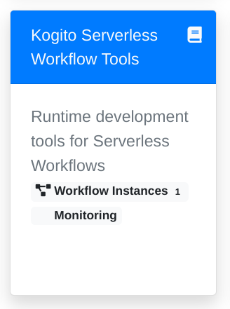
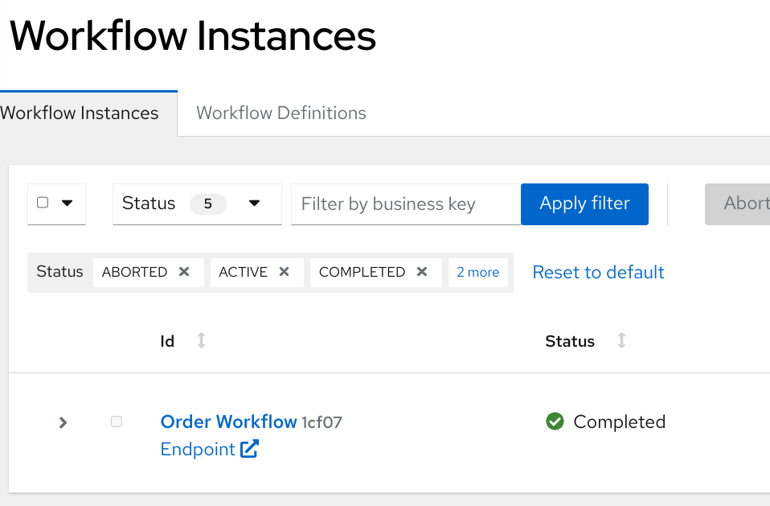
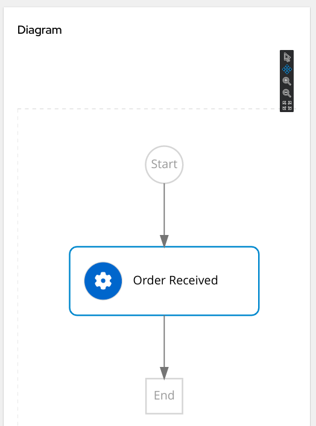
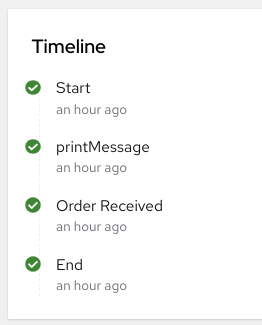
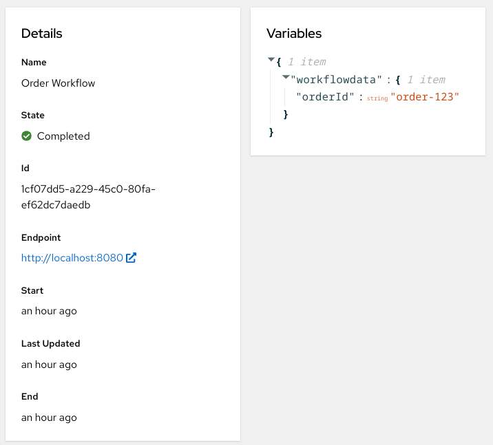

Explore the startup project
This section explores the key elements of a serverless workflow project.
The project structure
The Serverless Workflow technology was designed according to Microservice Architecture principles. A production ready solution is supported by multiple services: persistence, data index, dashboards, messaging, to name but a few.
However, in this tutorial, we are going to focus on the core service which is responsible for the workflow logic execution.
The workflow core logic is hosted by a plain Quarkus project with some extensions.
Serverless Workflow leverages some capabilities coming from of the Kogito upstream initiative. For such reason, the extensions have the kogito prefix:
-
kogito-quarkus-serverless-workflow -
kogito-addons-quarkus-persistence-jdbc -
kogito-addons-quarkus-process-svg -
kogito-quarkus-serverless-workflow-devui
Other common Quarkus extensions used are:
-
quarkus-smallrye-openapi -
quarkus-resteasy -
quarkus-resteasy-jackson -
quarkus-jdbc-postgresql
It’s worth noticing that, at the moment, serverless workflow extensions are not aligned to the quarkus platform, so they relies a dedicated bom:
<dependency>
<groupId>org.kie.kogito</groupId>
<artifactId>kogito-bom</artifactId>
<version>1.27.0.Final-redhat-00005</version>
<type>pom</type>
<scope>import</scope>
</dependency>The version 1.27.0.Final-redhat-00005 comes from the developer preview.
Run the workflow
If Quarkus is not running, start it:
./mvnw quarkus:devOpen a new terminal and start the process with the following command:
#!/bin/sh
curl -X POST http://localhost:8080/order \
-H 'Content-Type:application/json' -H 'Accept:application/json' \
-d '{ "workflowdata": { "orderId": "order-123"} }'You should get back the an output which resembles the following:
{"id":"7484e05f-3b95-4ac7-8c09-a2c717a0293e","workflowdata":{"orderId":"order-123"}}In the other terminal where Quarkus is running you can spot the following message in log:
Order received: order-123CONGRATULATION!!! Your first Serverless Workflow was executed as expected!
Inspect the workflow
Enter in the project folder and launch Visual Studio Code:
cd order-swf
code .Open the workflow file: src/main/resources/order.sw.json:
-
the editor is split in two panes: the text editor and the visual representation of the workflow
-
at the moment there is no way to graphically edit the workflow, the only option available is to edit the json file on the left side and watch the changes in the diagram
Let’s analyze the textual notation:
-
there are the classical information to identify uniquely the workflow (
id,version, etc) -
startattribute point to the first and only state in the flowOrder Received -
functionsare a set of reusable definitions for service invocations and/or expression evaluation -
statescontains a set of states which are the building block of the workflow logic
The workflow logic is minimal:
-
Order Receivedis an operation with one simple action: print a message in the standard output console. -
It’s worth noticing that also this simple print capability is declared among the functions and more precisely it’s a custom function which is an extension to the standard specification.
To learn more about Serverless Workflow notation and semantic don’t hesitate to read the official specification document which is really clear and accessible: https://github.com/serverlessworkflow/specification/blob/0.8.x/specification.md
Monitor the runtime
There is an important tool to investigate and potentially debug workflow instances at runtime:
-
From the Quarkus terminal, type
d, it should open for you the browser in the DevUI console: http://localhost:8080/q/dev/ -
Among other tiles focus on the Kogito Serverless Workflow Tools one, then click on Workflow Instances
 -
Click on the Order Workflow instance to show the details

Explore the information available:
-
workflow diagram
 -
timeline
 -
details
-
variables

Finally, have a look at the monitoring page charts on your own!